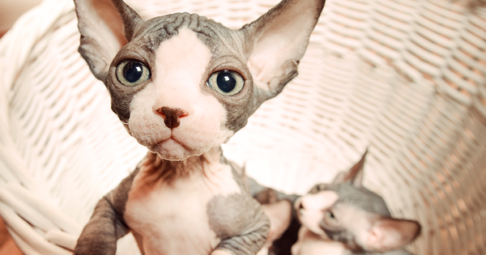

Gato Sphynx o Esfinge
El Gato Esfinge es un gato único ya que no tiene pelo
Algunos datos de esta especie:
- Pesan menos de 5kg (tanto machos como hembras)
- Viven de 8 a 14 años
- Son muy raros

Es el MEJOR gato del mundo porque:
- Es calvo
- Es muy tierno
- Cuando es bebé es muy arrugado y eso lo vuelve hermoso
Algunos links con información de la especie: